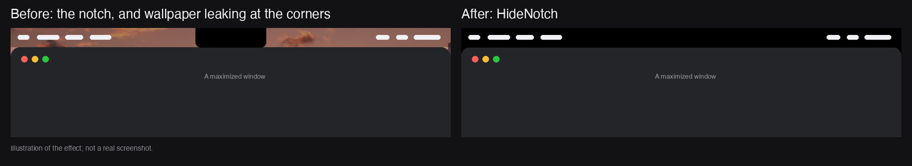
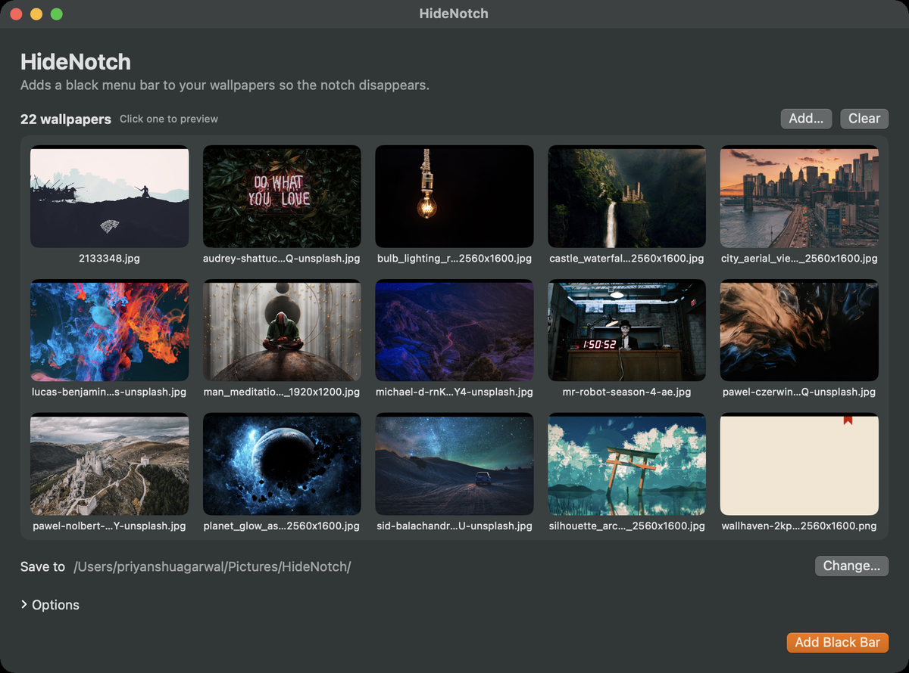

HideNotch
Hide the MacBook notch. A free, open-source TopNotch alternative.
Download for macOS View on GitHubHow it works
HideNotch adds a black menu bar to your wallpapers so the notch on MacBook Pro and MacBook Air disappears. Instead of drawing an overlay on screen, the black bar is baked into the wallpaper image itself, so there is nothing for a macOS update to break.

Illustration of the effect, not a real screenshot.
Features
- Gallery and preview. Drop a folder of wallpapers, click any thumbnail to preview it with the bar applied, and set it in one click.
- Menu bar toggle. Applies the bar to your current wallpaper on every connected display and restores the originals when you turn it off.
- Launch at login. Starts quietly in the menu bar.
- No wallpaper leak at window corners. Small black corner fillers close the gap between a window's rounded corners and the menu bar.
- Crop-aware. The bar is placed from the crop macOS actually applies to each wallpaper, so it lines up on any image size.

Install
brew install --cask agpriyanshu/tap/hidenotchOr download the DMG from the latest release. The app is ad-hoc signed and not notarized, so on first launch right-click it and choose Open.
FAQ
Will it keep working after macOS updates?
HideNotch does not run an overlay. The bar is part of the wallpaper image, so an update has nothing to break.
Which Macs does it work on?
It targets notched MacBook Pro and MacBook Air models running macOS 13 or later. It has been tested on a 14-inch MacBook Pro; reports from other models are welcome on GitHub.
Is it free?
Yes. HideNotch is open source under the MIT license.